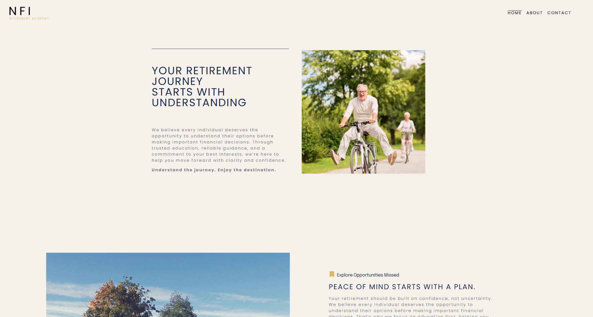
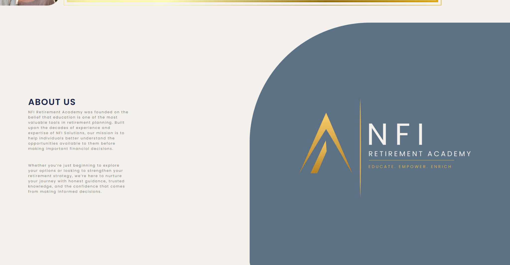
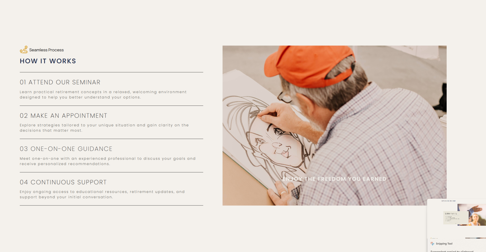
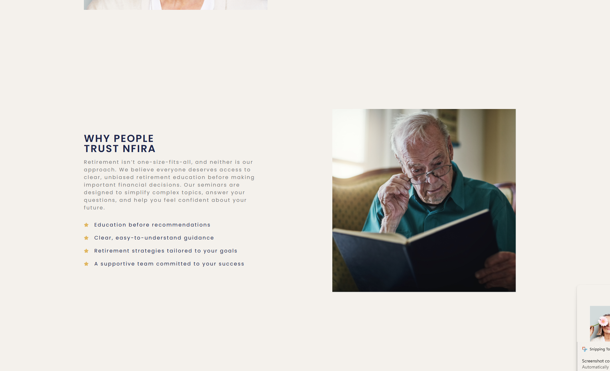
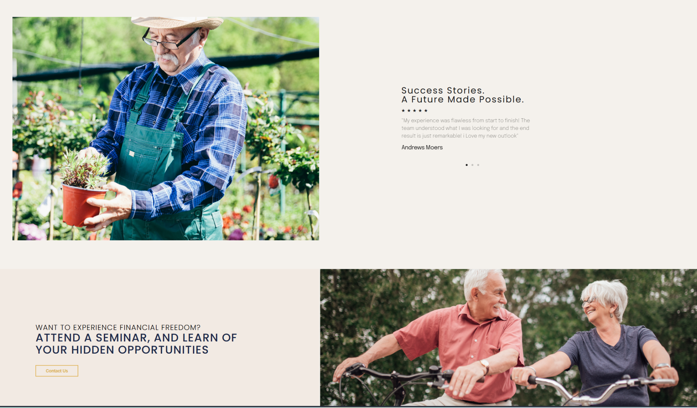
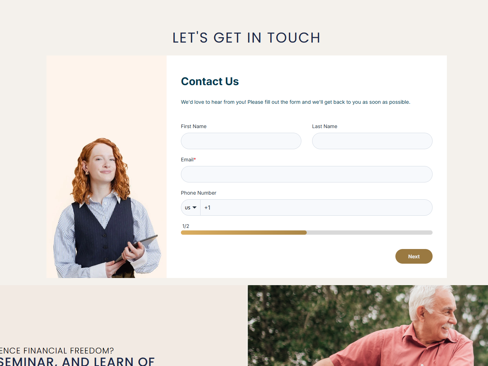

This case study documents my original design and build. The public websites have since changed and no longer represent that work. The screenshots below preserve the version described here.
The problem
NFI Retirement Academy was a new consumer education brand. Its website needed to serve people approaching retirement decisions, including older adults who might arrive with questions and little industry context.
The site had a second, future purpose: supporting agent-led seminar training. I developed a brand foundation that could accommodate both missions while making client education the immediate priority.

Establish the brand
I developed the positioning, color palette, and voice guidelines from scratch. The direction needed to feel approachable and credible to someone seeking education.
Where NFI Solutions used a corporate blue palette and professional imagery, NFIRA used warm cream, tan, and gold with photographs of people enjoying retirement. The copy shifted from an agent’s benefits to a client’s need for understanding.

Explain the next step
I introduced a four-step How It Works section: attend a seminar, make an appointment, receive one-on-one guidance, and continue with support. This made the service journey visible before asking visitors to take part.
It also connected the website’s educational role to the seminar and follow-up process. The site gave visitors a way to understand what would happen after their initial interest.

Make trust understandable
A Why People Trust NFIRA section explained credibility in plain language. A retirement story module added reassurance through an experience visitors could relate to.
These content decisions responded to an audience that could not be assumed to know the organization or the industry. The goal was to make the experience understandable and welcoming.


Reduce the initial form effort
The agent site used a single long contact form. For NFIRA, I designed a progressive form that began with basic contact details before asking for more information.
This was intended to make the first step more manageable for a visitor who was still deciding whether to engage. It is a design rationale, not a measured claim about conversion improvement.

Reuse the technical foundation
I owned the brand foundation, information architecture, page design, and technical build. I used the structural system developed for NFI Solutions so the team could maintain both sites without starting the architecture again.
That reuse supported consistency behind the scenes while allowing NFIRA’s content and visual experience to serve its own audience.
Launch and subsequent change
NFIRA launched and was live for approximately two months before being rebuilt. My version established the brand’s first public presence and provided a working foundation for client education.
The screenshots document that original work. The current website is not presented as evidence of my design decisions. The broader seminar and engagement system is documented in the NFIRA Product Design case study.